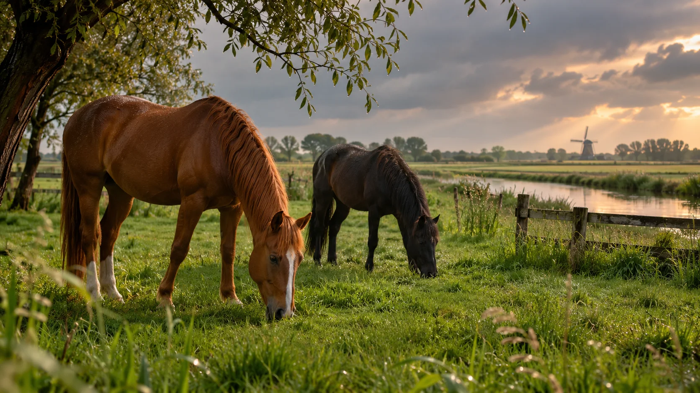
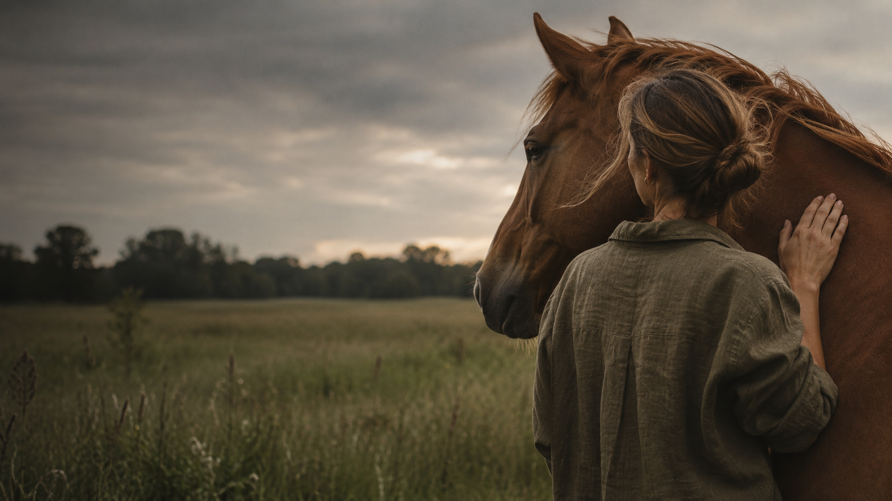

VELD & SPIEGEL PAARDENCOACHING
Ruimte om
jezelf anders
te zien.
Soms helpt het om even uit je gewone omgeving te stappen.
Bij Veld & Spiegel ontdek je samen met paarden wat er speelt. In alle rust, zonder oordeel, en met aandacht voor de volgende stap die bij jou past.
WAAROM PAARDEN
Waarom met
paarden?
Paarden reageren op wat er in het moment gebeurt. Je merkt hoe je beweegt, contact maakt en grenzen aangeeft.
Dat kan helpen om patronen vanuit een ander perspectief te bekijken.
Wat is paardencoaching? ↗
HET MOMENT
Een ander perspectief
begint met stilstaan.
Een sessie vindt plaats naast het paard. Je hoeft niet te rijden en ervaring met paarden is niet nodig.

De coach begeleidt het gesprek en helpt je jouw ervaring te vertalen naar inzichten die je kunt meenemen. Benieuwd hoe een sessie eruitziet?

V & S 02 / 04BEGELEIDING
Klaar voor
verandering.
Loop je steeds tegen hetzelfde aan? Een ontmoeting met een paard kan je helpen om even stil te staan bij wat je voelt en doet.
Samen verkennen we jouw vraag. Wat valt je op? Wat wil je anders? De sessie geeft ruimte om nieuwe inzichten rustig te laten landen.
Welke vorm van begeleiding past bij jou, bespreken we tijdens een kennismaking.
Wat kan ik voor je betekenen?ERVARINGEN
Wat mensen meenemen.
Fictieve reacties ter illustratie van het ontwerp.
01 / 04“Ik vond het fijn dat ik niets hoefde te forceren. Door even stil te staan bij het paard, merkte ik wat ik eigenlijk nodig had.”
Fictieve reactie
02 / 04“De sessie gaf me ruimte om anders naar mijn vraag te kijken. De rust van de omgeving hielp daarbij.”
Fictieve reactie
03 / 04“Ik wist vooraf niet wat ik moest verwachten. Het contact met het paard maakte het gesprek verrassend concreet.”
Fictieve reactie
04 / 04“Ik ging naar huis met een nieuw inzicht en een kleine stap die ik meteen kon proberen.”
Fictieve reactie